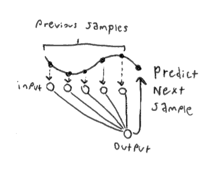
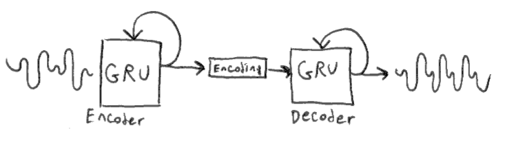
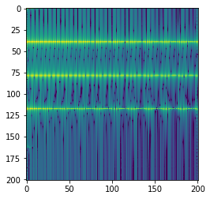
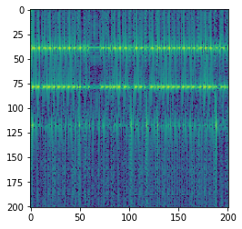

I've always been fascinated by analog synthesizers. Like acoustic instruments, they have an organic unpredictability that a skilled player can learn to control, but will continue to provide new possibilites and sounds to explore for years. Digital synthesizers provide just as much ability to control the timbre, but do so with a rigid set of controls that seem more appropriate for engineers than artists. The most expressive synthesizers have controls which effect the sound in complex non-linear ways. Such instruments feel more like interactive physical systems than digital algorithms.
Neural networks are good candidates for creating dynamic expressive instruments. Generative audio models like Wavenet and SampleRNN have outperformed traditional vocoders in generating realistic human speech. NSynth, which is an autoencoder based on the Wavenet architecture, can produce instrument sounds comparable to the best physical models. Unfortunatley, these models are computationaly expensive, and can only be made to run in real-time by sacrificing output quality. Although hyperrealism is important for speech synthesis, I believe many expressive and interesting virtual instruments can be created with simple neural models. Here I describe some of the work I have been doing to train lightweight neural synthesis models.
Wavenet is a type of autoregressive model. In an autoregressive model, each sample is conditioned on all previous samples: $$ x_t = \mathbb{E}[p(x_t | x_1 ... x_{t-1})] $$ A very simple autoregressive model can be implemented with a basic fully-connected neural network, with \( x_1 ... x_{t-1} \) as inputs, and \( x_t \) as the single output. Of course, we must choose a fixed sized for the input layer, therefore our output is not really conditioned on all previous samples but a finite receptive field of our choosing. A longer receptive field will let the network learn longer term structure, but will be more computationally intensive.
As a loss function, we could simply use mean squared error between the predicted sample and the next sample in the training data. However it is standard practice to instead quantize each sample and use a softmax as the final layer of the network. Now, each possible output value is represented as part of a probability distribution, and we can use a cross-entropy loss function. In the Wavenet paper they found this to provide better results. This also lets us use biased sampling techniques, meaning post-training we can decide to retrieve samples which are more varied, or more uniform. That being said, in my own experiments, I have found mean squared error models to be more efficient and produce fewer unwanted artifacts in the sound.
The GRU models are trained to output the next sample given the previous sample, a hidden state vector, and a
parameter vector containing the pitch. At runtime we can vary this parameter to change the pitch of the
model's output. I have trained the model using samples from the NSynth dataset. Here is an audio clip of the
network trained with mean squared error, with the pitch parameter slowly being increased:
And here is a a clip of the model, but trained with quantized output and crossentropy loss instead:
The model trained with MSE learns to interpolate between pitch values which it did not see in the training set. I can see why crossentropy is used for large models like wavenet, but for small models I have found it much easier to get pleasant sounds from MSE.
Besides GRUs, I also experimented with a handful of other recurrent model types, such as convolutional and clockwork RNNs. I didn't see dramatic improvements in quality from these, and they performed slower, so I stuck with GRUs.
Jupyter notebook for the GRU modelConditioning the GRU with the parameter vector allowed us to change the pitch of the sound at runtime. This was only possible because our training data (NSynth) is annotated with pitch information. What if we would like to have additional parameters to change the timbre? Since we don't have timbre annotations, we can use an unsupervised model, such as an autoencoder, to create parameters for us.

We now have two GRU networks, one for creating an encoding of the input sound, and another for recreating
sounds from the encoding. The encoder is only used during training. At runtime, we can generate random
encoding vectors in order to get interesting sounds out of the decoder. I've trained such a model using the
entire NSynth dataset, here are some audio samples:
Generating audio autoregressivley at the sample level is slow, since we require one forward pass through the network per sample. To take advantage of parallel processing, we can greatly speed this up by generating audio in frames. It is also helpful to use frames of the Short-Time Fourier Transform (STFT) as opposed to frames of raw waveforms. When we use the STFT, the network learns the change in the magnitude of certain frequencies over time, instead of needing to learn the detailed structure of the waveform. This can often be represented with simple exponentials or low-frequency periodic functions, which is advantageous, as neural networks have a spectral bias towards low-frequnecy functions.
I have built a very simple model, similar to the sample-level autoregressive model mentioned above. It is a 2-layer feed-forward network which is tasked with predicting the a frame of the STFT given the previous frame. Here is a spectrogram (visual represenation of the STFT) for a sound from the NSynth dataset:
During training, vertical slices of this spectrogram are fed into the network, and the loss is calculated as the difference between the output and the next vertical slice. At runtime, the network is 'seeded' with the first slice from this spectrogram, and hopefully it should be able to reproduce the original spectrogram faithfully. Here is the output for a model trained on the preceding spectrogram: 
Similar to the sample-level autoregressive model, this model has a hard time learning long term structure, but can be easily trained to reproduce continuous sounds.
Jupyter notebook for the STFT model